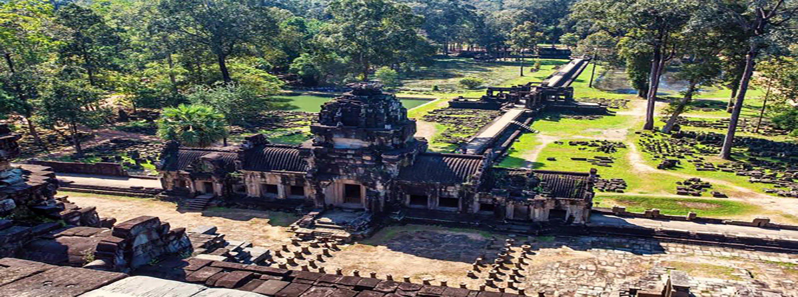

Siem Reap is the province in the northern of Cambodia. It is a very popular resort town and the great get away to the Angkor region. It could also be a dream place for backpacker to take the journey to the old town of the ruin temples.
There is something for everyone to do. From historical site of the ruin temples of Angkor Wat to nature and sight seeing, you will be able to find interesting things to do everyday while you are there.
The best time to visit Siem Reap is in the dry season which is from October to April. Siem Reap province is about 5 hours drive from the capital city of Phnom Penh.
The best way to get there is by bus that you can take from Phnom Penh, the capital city of Cambodia. There are many bus company with many different time schedule that you can choose from. The price can be range from $7 to $10 dollars for one way trip.
Angkor Wat, Siem Reap is the world's largest religious building that ever made by man. It is a must visit place for all backpackers coming to Cambodia.
We guarantee that you will be able to find this temple very interesting with all the background history and the new experience that you will have while exploring many places in the surounding area
